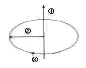
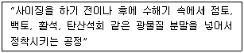
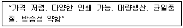

시각디자인산업기사 (2005-03-20 기출문제)
1과목: 색채학
1. 다음 색의 연상에 대한 설명 중 틀린 것은?
- 빨강색은 원시언어에서 최초로 이름 붙인 색이며 원시예술, 고전예술에 많이 사용된다.
- 노랑색은 주로 빛, 광명, 쾌활, 활동으로 연상된다.
- 파랑색은 우아하고 신비하고 환상, 장중으로 연상된다.
- 회색은 겸손, 우울, 점잖음으로 연상된다.
(정답률: 알수없음)

2. 무대 조명에서 관찰될 수 있는 색의 혼합은?
- 감산혼합
- 가산혼합
- 병치혼합
- 회전혼합
(정답률: 알수없음)
3. 먼셀기호 5GY 7/10 이 뜻하는 일반색 이름은?
- 연두
- 자주
- 진노랑
- 남색
(정답률: 알수없음)
4. 다음 배색 중 가장 차분한 느낌을 주는 것은?
- 빨강 - 흰색 - 검정
- 하늘색 - 흰색 - 회색
- 주황 - 녹색 - 보라
- 빨강 - 흰색 - 분홍
(정답률: 알수없음)
5. 무수히 많은 색 차이와 색혼합, 색교정을 정확하게 수행하기 위해서는 어떤 시세포가 작용할 수 있는 시각상태이어야 하는가?
- 추상체
- 간상체
- 염색체
- 수정체
(정답률: 알수없음)
6. 교통기관의 색채계획에 관한 일반적인 기준 중 가장 타당성이 낮은 것은?
- 내부는 밝게 처리하여 승객에게 쾌적한 분위기를 만들어 준다.
- 출입이 잦은 부분에는 더러움이 크게 부각되지 않도록 색을 사용한다.
- 차량의 외관은 클수록 수축색을 사용하여 차체가 혐오스럽지 않게 한다.
- 운전실 주위는 반사량이 많은 색의 사용을 피한다.
(정답률: 알수없음)
7. 다음 중 한상체가 가장 발달되지 않은 동물은?
- 쥐
- 올빼미
- 고양이
- 닭
(정답률: 알수없음)
8. 먼셀의 색입체 수직 단면도에서 중심축 양쪽에 있는 두 색상의 관계는?
- 인접색
- 보색
- 유사색
- 약보색
(정답률: 알수없음)
9. 외과병원 수술실 벽면의 색을 밝은 청록색으로 처리한 것은 어떤 현상을 막기 위한 것인가?
- 푸르킨예 현상
- 연상작용
- 동화현상
- 잔상현상
(정답률: 알수없음)
10. 다음 관용색명에 대한 설명 중 옳은 것은?
- 색의 삼속성으로 구분한다.
- 한국산업규격의 색이름이다.
- 먼셀표색계를 말한다.
- 감성적이고 부정확하다.
(정답률: 알수없음)
11. 다음은 색입체 구성의 개념도이다. 바르게 설명된 것은?

- ①-채도, ②-명도, ③-색상
- ①-명도, ②-색상, ③-채도
- ①-명도, ②-채도, ③-색상
- ①-채도, ②-색상, ③-명도
(정답률: 알수없음)
12. 색채에 대한 심리 반응에 관한 설명 중 틀린 것은?
- 명도가 높고 채도가 높은 색은 우울해 보인다.
- 한색은 차고, 난색은 따뜻한 색으로 느껴진다.
- 철창살을 난색계로 칠하면 더 굵어 보인다.
- 같은 색이라도 면적이 넓으면 채도가 높아 보인다.
(정답률: 알수없음)
13. 두 가지 이상의 색을 옆에 놓았을 때 그 색들의 조화에서 오는 미를 느끼기 위해 색을 늘어 놓은 것은?
- 색의 혼합
- 색의 배색
- 색의 대비
- 색의 명시
(정답률: 알수없음)
14. 문·스펜서의 조화론에서 모든 색의 중심이 되는 순응점은?
- N 1
- N 5
- N 7
- N 9
(정답률: 알수없음)
15. 다음에서 가장 식욕을 돋구는 색은?
- 주황색
- 노란색
- 보라색
- 흰색
(정답률: 알수없음)
16. 우리말에 진한색, 연한색, 흐린색, 맑은색 등 지각적인 면에서 색의 강, 약이라고 할 수 있는 것은?
- 명도
- 색상
- 채도
- 색도
(정답률: 알수없음)
17. 명시도를 높이는 결정적인 조건 중 가장 좋은 것은?
- 크기의 차이를 크게 하는 것
- 명도의 차이를 크게 하는 것
- 한난의 차이를 크게 하는 것
- 채도의 차이를 크게 하는 것
(정답률: 알수없음)
18. 다음 제품색에 관한 설명 중 틀린 것은?
- 제품의 색이 난색계이면 실제보다 작게 보일 우려가 있다.
- 제품의 색은 브랜드 이미지를 형성하는데 중요한 역할을 한다.
- 제품에 대한 구매자의 선호도에는 제품에 따른 기능색과 유행색도 감안된다.
- 포장색이 저명도이면 열을 흡수해서 내부 제품의 부패와 손상을 촉진시킬 수도 있다.
(정답률: 알수없음)
19. 다음 색채조절시 사전조사할 항목 중 가장 거리가 먼 것은?
- 건축의 입지조건을 조사한다.
- 경영자의 선호색을 조사한다.
- 건축실내의 물리적 기능을 조사한다.
- 건축실내의 작업심리를 조사한다.
(정답률: 알수없음)
20. 조명 및 관측조건이 달라도 주관적으로는 물체색이 별로 변화되어 보이지 않는 색지각 현상은?
- 동화효과
- 항상성
- 잔상
- 푸르킨예
(정답률: 알수없음)
2과목: 인쇄 및 사진기법
21. 다음 설명은 종이의 제조공정 중의 한 부분이다. 이 공정의 명칭은?

- 고해
- 착색
- 전충
- 초지
(정답률: 알수없음)
22. 물과 지방의 반발작용을 주로 이용한 인쇄 방식은?
- 평판 인쇄 방식
- 볼록판 인쇄 방식
- 공판 인쇄 방식
- 오목판 인쇄 방식
(정답률: 알수없음)
23. 거리계 연동식 카메라(Range finder camera)의 장점이 아닌 것은?
- 가볍고 휴대하기 편리하다.
- 정확한 초점을 맞출 수 있으며 선예한 화상을 얻을 수 있다.
- 시차가 생기지 않는다.
- 촬영시 셔터의 진동이 적고 플래시 촬영시 셔터속도의 제한을 받지 않는다.
(정답률: 알수없음)
24. 피사계 심도를 결정하는 요인과 가장 거리가 먼 것은?
- 렌즈의 조리개
- 렌즈의 초점거리
- 피사체와 촬영거리
- 카메라의 셔터속도
(정답률: 알수없음)
25. 피인쇄체에 속하지 않는 것은?
- 촬영용 원고
- 폴리에틸렌수지
- 비닐
- 종이
(정답률: 알수없음)
26. 물에 반발하는 성질이 좋기 때문에 방습·내유지성을 주기 위해서 이 처리를 한다. 주로 종이컵, 식료품의 포장가공에 많이 사용되는 표면가공 방법은?
- 비닐 코팅
- 폴리프로필렌 코팅
- 폴리에스테르 코팅
- 왁스 코팅
(정답률: 알수없음)
27. 사각 밖에서 오는 유해광선을 막고 선명한 화상을 얻기 위하여 사용하는 카메라 액세서리는?
- 렌즈후드
- 필터
- 접사렌즈
- 스트로보
(정답률: 알수없음)
28. 간이 제책이란?
- 화학풀을 사용, 무선철기로 제책하는 방식
- 낱장으로 된 사무 용지를 풀로 붙이는 방식
- 책 옆을 철사로 찍어 클로스로 싸는 양장 형식으로 제책하는 방식
- 반을 접은 책장 가운데를 철사로 찍어 매는 방식
(정답률: 알수없음)
29. 다음 중 컬러 사진에서 사람이나 동물의 눈이 붉게 나타나는 것을 방지하기 위한 가장 바람직한 방법은?
- 플래시의 조명각을 렌즈의 광축에서 떨어지게 한다.
- 셔터를 플래시와 동조되기에 적합한 속도로 맞추거나 광선의 강도를 강하게 한다.
- 이미 있었던 광선을 약하게 한다.
- 필름 감도를 낮춘다.
(정답률: 알수없음)
30. 셔터 중에서 단추를 누르면 셔터가 열리고, 손을 떼면 닫히도록 설계된 단시간 노출용의 셔터는?
- T셔터
- B셔터
- I셔터
- 자동셔터
(정답률: 알수없음)
31. 그라비어 인쇄기는 종이 급지장치와 배지장치를 제외하면 기본구조가 네가지로 되어 있다. 다음 중 기본구조 4가지에 포함되지 않는 것은?
- 인압장치
- 잉크장치
- 건조장치
- 습수장치
(정답률: 알수없음)
32. 자연광, 인공광으로 부터 필요한 파장의 빛을 선택적으로 흡수·투과하기 위해 사용되는 것은?
- 렌즈(lens)
- 플래시(flash)
- 필터(filter)
- 조리개
(정답률: 알수없음)
33. 바라이타 인화지에 비해 RC인화지가 수세 시간이 짧은 이유로 가장 잘 설명한 것은?
- RC인화지 현상시 약품이 인화지에 침투하지 못하도록 수세촉진 처리되어 있기 때문
- RC인화지는 정착공정에서 1차수세 작업이 이루어지기 때문
- RC인화지는 섬유질이 흡수와 탈수가 잘 되어 있어 수세 시간이 단축되기 때문
- 인화지 양쪽에 폴리에틸렌이 칠해져 있어 섬유질 사이에 약품이 들어가지 못하기 때문
(정답률: 알수없음)
34. 처음 찰영시 F번호를 8에 놓고 촬영하였다. 다른 조건은 그대로 두고 F번호를 11로 정정하면 밝기는 어떻게 되는가?
- 1/2배 감소
- 1/4배 감소
- 4배 증가
- 2배 증가
(정답률: 알수없음)
35. 망점 넓이가 같고 깊이가 다른 오목점으로 농담을 나타내는 방식은?
- 컨벤셔널 그라비어(conventional gravure)
- 망점 그라비어(halftone gravure)
- 덜젠 그라비어(Dultgen gravure)
- 하드 도트 스크린 그라비어(hard dot screen gravure)
(정답률: 알수없음)
36. 컬러현상시 미노출된 은염(AgX)을 제거 또는 탈은을 하게 되는 과정은?
- 현상, 발색
- 표백, 정착
- 수세, 건조
- 발색, 수세
(정답률: 알수없음)
37. 사진 감광판을 놓고 노광하면 감광판에서는 눈에 보이지 않지만 피사체의 영상이 기록되는 현상은?
- 현상
- 잠상
- 정착
- 보력
(정답률: 알수없음)
38. 황산바륨을 사용하지 않고 수지인 폴리에틸렌을 종이 베이스에 칠한 인화지는?
- RC인화지
- Pb인화지
- PT인화지
- SG인화지
(정답률: 알수없음)
39. 인화가 계속되는 동안 인화지를 빛에 노출시켜 가장 밝은 부분과 그림자 부분 사이에 후광과 같은 효과를 얻는 인화 방법은?
- 포토그램
- 합성 인화
- 사바티에 인화
- 에칭 인화
(정답률: 알수없음)
40. 커플러(coupler)와 가장 밀접한 관계가 있는 것은?
- 컬러사진
- 흑백사진
- 표백제
- 정착제
(정답률: 알수없음)
3과목: 시각디자인론
41. 광고 수용 과정을 바르게 나열한 것은?
- 주의 - 관심 - 욕구 - 행동
- 관심 - 주의 - 욕구 - 행동
- 욕구 - 주의 - 관심 - 행동
- 욕구 - 관심 - 주의 - 행동
(정답률: 알수없음)
42. 타이포그래피의 선구적인 주자로 활자의 다이나믹한 시각효과를 창출해낸 유럽의 디자이너는?
- 얀 치홀트
- 르 꼬르뷔제
- 막스빌
- 미스 반 델 로에
(정답률: 알수없음)
43. 미술공예운동의 창시자라고 불리우는 사람은?
- 요셉 알베르스
- 윌리암 모리스
- 모홀리 나기
- 바실리 칸딘스키
(정답률: 알수없음)
44. 황금분할의 정확한 비례로 맞는 것은?
- 1 : 1.414
- 1 : 1.618
- 1 : 1.5
- 1 : 2
(정답률: 알수없음)
45. 미술공예운동(Arts and Crafts Movement)의 영향을 받아 곡선적이며, 동적인 식물무늬가 많은 장식위주의 디자인 운동은?
- 산업혁명
- 독일공작 연맹
- 유겐트스틸(Jugendstill)
- 프렌치 로코코(French Rococo)
(정답률: 알수없음)
46. 입체의 내부구조를 나타내기 위하여 그 내부를 볼 수 있도록 평면으로 절단해 그려지는 것은?
- 평면도학
- 입체도학
- 단면도
- 투시도
(정답률: 알수없음)
47. 디자인 창조를 위한 사회기반의 조성으로 잘못된 것은?
- 창조성 및 주체성을 고무하기 위한 시스템 조성
- 디자인 활동 지원을 위한 정보망 구축
- 디자인 활동의 이분화
- 타 분야와의 교류
(정답률: 알수없음)
48. 굿 디자인(Good Design)의 조건으로 가장 합당한 것은?
- 합목적성, 심미성, 독창성, 경제성
- 실용성, 유행성, 계절성, 대중성
- 합목적성, 기능성, 독창성, 지역성
- 실용성, 예측성, 독창성, 대중성
(정답률: 알수없음)
49. 디자인의 문제 해결에서 가장 먼저 해결해야 할 것은?
- 조사(Research)
- 분석(Analysis)
- 평가(Evalution)
- 종합(Synthesis)
(정답률: 알수없음)
50. 제도에서 물품의 외형을 나타내는 선은?
- 실선
- 파단선
- 일점쇄선
- 은선
(정답률: 알수없음)
51. 다음 중 각국에서 일어난 디자인 운동과 나라가 바르게 연결된 것은?
- Art Nouveau - 미국
- Jugend Stil - 오스트리아
- Sezession - 독일
- De Stijl - 네덜란드
(정답률: 알수없음)
52. 일정한 질서를 가지고 배열되는 단계적 변화는?
- 그라데이션(Gradation)
- 하모니(Harmony)
- 균형(Balance)
- 왜곡(Distortion)
(정답률: 알수없음)
53. 다다이즘(Dadaism)의 설명이 아닌 것은?
- 1차 세계대전 중 유럽에서 일어난 허무주의 예술운동이다.
- 전통적인 문명, 사회제도 등 속박에서 해방하려는 운동이다.
- 마르셀 뒤상과 에른스트가 대표적인 작가이다.
- 이성의 산물인 합리주의를 신봉하고 재래의 미학을 주장하는 운동이다.
(정답률: 알수없음)
54. 디자인이 수행해야 할 역할이 아닌 것은?
- 기능적인 측면에서 특성의 간소화와 극대화를 이루어야 한다.
- 기능적 측면보다 미적인 측면에서 심리적인 욕구를 충족시켜야 한다.
- 경제적 측면에서 제작비용 간소화, 생산성 증대 등의 경제적 요인을 통합해야 한다.
- 환경에 관련된 질적향상을 추구해야 한다.
(정답률: 알수없음)
55. 미국적인 디자인의 특성으로 디자인 문제가 산업과 연결되어 나타나게 된 사상은 ?
- 공예와 제품은 다르다.
- 기계는 미적 수준을 저해한다.
- 형태는 기능을 따른다.
- 형태와 외관은 무관하다.
(정답률: 알수없음)
56. 게슈탈트의 법칙이 아닌 것은?
- 접근성
- 조건성
- 유사성
- 폐쇄성
(정답률: 알수없음)
57. 치수 보조 기호의 설명이 올바른 것은?
- R : 중심선
- ø : 원의 직경
- T : 모따기
- C : 판의 두께
(정답률: 알수없음)
58. 한국산업규격의 제도통칙에 합당한 정투상 도법은?
- 제1각법
- 제2각법
- 제3각법
- 제4각법
(정답률: 알수없음)
59. 1940년대 중반부터 가느다란 선과 추상적인 덩어리 형태와의 균형, 간결하고 순수하고 부풀리고 조각적이며 자유로운 형태가 보여졌다. 1950년대 재규어, 시트로엥등의 자동차 디자인에도 적용되었는데 이러한 디자인을 무엇이라 하는가?
- 아르누보
- 유겐트스틸
- 기능주의적 모더니즘 디자인
- 유기적 모더니즘 디자인
(정답률: 알수없음)
60. 파리에서 1895년 개점한 사무엘 빙의 상점에서 유래된 미술양식의 이름은?
- 미술공예운동(Arts & Craft Movement)
- 아르누보(Art Nouveau)
- 큐비즘(Cubism)
- 순수주의(Purism)
(정답률: 알수없음)
4과목: 시각디자인실무 이론
61. 교통, 수송 관계의 기업 심볼 마크를 디자인하고자 할 때 일차적으로 고려하여야 할 적절한 이미지는?
- 스피드, 안전성, 신뢰감, 쾌적함
- 스피드, 쾌적함, 심미감, 전통성
- 스피드, 경쾌함, 구체적, 친밀감
- 스피드, 안전성, 추상성, 공공성
(정답률: 알수없음)
62. 소형 자동차의 통행량을 알아보기 위해 가장 알맞은 시장조사 방법은?
- 관찰조사
- 가상조사
- 확률조사
- 실험조사
(정답률: 알수없음)
63. 다음 중 소비자 조사법의 종류가 아닌 것은?
- 실험법
- 사례연구법
- 심층면담법
- 미래척도법
(정답률: 알수없음)
64. 화면이나 바탕인쇄를 지면 전체에 꽉 차도록 레이아웃 하는 것을 무엇이라고 하는가?
- 블리드(bleed)
- 거터(gutter)
- 그리드(grid)
- 헤드에지(head-edge)
(정답률: 알수없음)
65. 다음 중 브레인스토밍(Brain storming)을 적절하게 설명한 것은?
- 상사나 광고주에게 디자인 계획을 논리적으로 설명하는 방법
- 여러가지 아이디어를 머리속에 저장하기 위한 암기법
- 아이디어 작업시 두뇌를 맑게 하는 예비작업
- 그룹을 짜서 창조적 아이디어를 내놓는 집단적 아이디어 개발법
(정답률: 알수없음)
66. 신제품 개발의 중요성에 관한 설명 중 잘못된 것은?
- 기업체의 안정과 발전에 기여
- 자사의 기존제품과 경쟁
- 시장구조 변화에 대한 적응력 제공
- 제품의 수명주기 및 이익주기에 대한 대응
(정답률: 알수없음)
67. 코퍼레이트 컬러를 설정할 때 주의해야 할 사항이 아닌 것은?
- 단순히 컬러가 갖는 일반적인 이미지만으로 결정해서는 안된다.
- 국제화의 관점에서, 종교·관습 등의 차이에서 기인하는 금기색에 대한 배려도 필요하다.
- 응용 아이템에 적용될 경우, 재생의 용이성 등도 충분히 검토해야 한다.
- 업종의 이미지에 따라 식품 관계인 경우 빨강이나 따뜻한 색으로 선택해야 한다.
(정답률: 알수없음)
68. 다음 내용은 어느 포장 방법의 특징인가?

- 유리
- 목재
- 플라스틱
- 종이
(정답률: 알수없음)
69. 경영이념으로서의 마케팅에 관한 설명 중 가장 적절한 것은?
- 상품에 대한 시장상황을 조사하고 분석하여 자료를 만들어내는 일
- 상품 및 서비스를 생산자가 소비자에게 전달하는 과정에 관련된 기업의 모든 경영활동
- 구매하기 쉬운 진열관리와 상점의 판매촉진 등 머천다이징에 관련되는 일
- 상품의 평가를 포함해 경합품의 평가와 팔리는 정도, 관련정보를 수집하는 일
(정답률: 알수없음)
70. 교통광고는 형태, 위치, 움직임의 유무 등에 따라 여러가지로 분류할 수 있다. 교통광고의 형태가 아닌 것은?
- 네온사인형 광고
- 포스터형 광고
- 와이드 칼라형 광고
- 액자형 광고
(정답률: 알수없음)
71. 과학 일러스트레이션의 대상으로만 묶여진 것은?
- 뉴스, 일기예보
- 신문, 잡지, 소설의 내용
- 기계, 가구, 기구 등의 공업제품
- 의학, 생물, 천문, 지리
(정답률: 알수없음)
72. 잡지광고에 관한 설명 중 잘못된 것은?
- 자료 보존적 기능이 있다.
- 오디언스(Audience)가 불명확하다.
- 상품의 재현이나 무드표현이 용이하다.
- 회람율이 높다.
(정답률: 알수없음)
73. 현대 커뮤니케이션의 특징이 아닌 것은?
- 활자 중심에서 탈활자화 또는 탈문자화하는 현상을 보인다.
- 현대인은 느끼는 인간에서 이해하는 인간으로 회귀하고 있다.
- 현대인은 색채감각의 변화가 단색적인 감각에서 컬러화되고 있다.
- 신문이나 잡지에서 사진이나 도안 페이지를 확대하고 있다.
(정답률: 알수없음)
74. 소비자 표본추출 방법 중 모(母)집단의 전(全)단위로부터 제비뽑기 혹은 난수표를 사용하여 추출단위를 결정하는 방법은?
- 계통적 임의 추출법
- 다단 추출법
- 단순 임의 추출법
- 층화 추출법
(정답률: 알수없음)
75. 1919년부터 약 20년간 프랑스를 중심으로, 무의식의 세계를 복합적으로 표현한 미술사조의 영향을 받은 포스터는?
- 히피 포스터
- 초현실주의 포스터
- 표현주의 포스터
- 구성주의 포스터
(정답률: 알수없음)
76. 디자인에서 형태 배치의 기준으로 삼기 위해 설정하는 규칙적인 구분선 또는 형태를 무엇이라 하는가?
- 폴리오
- 세네카
- 레이아웃
- 그리드
(정답률: 알수없음)
77. 교통표지판처럼 어떤 행위를 지시하거나 금지할 때의 표시방법은?
- 실제적 표시
- 설명적 표시
- 통념적 표시
- 규약적 표시
(정답률: 알수없음)
78. CF 제작을 위한 '스토리 보드'의 설명으로 옳은 것은?
- CF의 줄거리를 글로 적은 시나리오
- CF 제작의 컨셉을 정리한 것
- 촬영을 위한 구체적인 설계도
- 광고내용의 흐름을 간단한 스케치로 시각화한 것
(정답률: 알수없음)
79. 옥외 광고의 특징 중 가장 적절한 것은?
- 오가며 눈에 띄어 상기시키는 역할을 한다.
- 고정되어 있기 때문에 자세한 정보전달이 가능하다.
- 매우 크기 때문에 많은 디자인 요소를 표현할 수 있다.
- 일정지역에 있으므로 목표집단 광고가 용이하다.
(정답률: 알수없음)
80. 포장디자인에 있어서 색상 선정시 염두에 두어야 할 내용이 아닌 것은?
- 제품의 속성강조
- 제품의 개성표현
- 환경보호효과
- 임펙트 효과
(정답률: 알수없음)